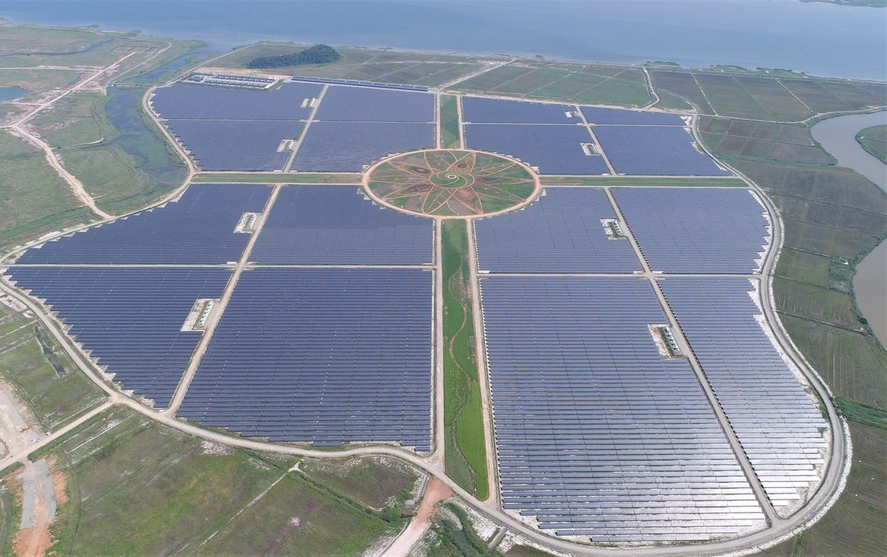

국회예산정책처, 햇빛소득마을 성패는 수익성과 전력망에 달려

계약단가 하락·접속 대기 3,939MW·지역 간 부지 비용 격차 짚어
국회예산정책처가 2030년까지 3,000곳 이상, 2026년 700곳으로 시작하는 햇빛소득마을 사업을 분석해 수익성과 계통 확보를 관건으로 꼽았다. 예정처는 kWh당 약 150원인 태양광 계약단가를 정부가 2035년까지 80원 이하로 낮출 방침이어서 마을 수익이 줄 수 있고, 부지를 사거나 빌려야 하는 곳은 비용이 커 지역 격차가 생길 수 있다고 봤다. 2025년 10월 기준 접속 대기 발전설비가 3,939MW에 이르는 계통 문제와 함께, 햇빛소득마을에 우선접속권을 주면 기존 대기 사업자의 권익을 침해하거나 악용될 수 있다는 점도 지적했다. 비슷한 앞선 사업인 농식품부 농업농촌 RE100 실증사업은 2022~2024년 12개 마을을 뽑았지만 2025년 말까지 완료 1곳, 포기 1곳이었다.
시민에너지 관점
12개 마을 가운데 완료 1곳, 포기 1곳이라는 앞선 실증사업의 성적은 목표 숫자보다 끝까지 가는 구조가 중요하다는 점을 보여 준다. 단가가 내려가면 마을 사업은 수지가 안 맞는다는 우려가 있지만, 그럴수록 부지 비용이 들지 않는 공공부지와 마을 공동 자산을 활용하고 수익을 지역 안에서 돌리는 설계가 버티는 힘이 될 것으로 보인다. 계통 우선접속 같은 특례도 누가 소유한 사업에 주느냐가 기준이 돼야 악용을 막을 수 있다. 정부는 마을 수를 늘리기 전에 계통과 단가 위험을 주민이 감당할 수 있는 장치부터 갖춰야 한다.
정부는 마을 수를 늘리기 전에, 태양광 계약단가가 80원 이하로 내려가도 버틸 수 있는지 보여 주는 마을 유형별 수지 계산을 공개해야 한다. 지자체는 부지 비용이 들지 않는 공공부지와 마을 공동 자산을 먼저 찾아 마을과 연결해 줄 수 있다. 계통 우선접속은 주민이 실제로 소유한 사업인지를 확인한 뒤 주는 기준으로 다듬어야 악용을 막을 수 있다. 농업농촌 RE100 실증사업이 12개 마을 가운데 완료 1곳에 그친 이유를 따로 분석해 다음 사업에 반영하는 일도 필요하다.
출처: 데일리안 2026-07-01 김소희 원문 보기
国会予算政策処「太陽光所得村の成否は収益性と電力網にかかる」
契約単価の下落・接続待ち3,939MW・地域間の用地コスト格差を指摘
国会予算政策処は、2030年までに3,000カ所以上、2026年は700カ所から始める太陽光所得村事業を分析し、収益性と系統の確保をカギに挙げた。予算政策処は、kWhあたり約150ウォンの太陽光の契約単価を政府が2035年までに80ウォン以下に引き下げる方針のため村の収益が減る可能性があり、用地を購入または賃借しなければならない所はコストがかさみ、地域格差が生じ得るとみた。2025年10月時点で接続待ちの発電設備が3,939MWに達する系統問題とともに、太陽光所得村に優先接続権を与えると既存の待機事業者の権益を侵害したり悪用されたりする恐れがある点も指摘した。似た先行事業である農林畜産食品部の農業農村RE100実証事業は、2022〜2024年に12の村を選んだが、2025年末までに完了1カ所、断念1カ所にとどまった。
市民エネルギーの視点
12村のうち完了1カ所、断念1カ所という先行実証事業の成績は、目標の数よりも最後までやり遂げる構造が重要だという点を示している。単価が下がれば村の事業は採算が合わないとの懸念もあるが、だからこそ用地コストのかからない公共用地や村の共同資産を活用し、収益を地域内で循環させる設計が持ちこたえる力になるとみられる。系統優先接続のような特例も、誰が所有する事業に与えるのかを基準にしてこそ悪用を防げる。政府は村の数を増やす前に、系統と単価のリスクを住民が担える仕組みを整えるべきだ。
政府は村の数を増やす前に、太陽光の契約単価が80ウォン以下に下がっても持ちこたえられるかを示す、村の類型別の収支計算を公開すべきだ。自治体は用地コストのかからない公共用地や村の共同資産をまず探し、村と結びつけることができる。系統優先接続は、住民が実際に所有する事業かどうかを確かめてから与える基準に練り上げてこそ、悪用を防げる。農業農村RE100実証事業が12村のうち完了1カ所にとどまった理由を別途分析し、次の事業に生かすことも必要だ。
出典: Dailian 2026-07-01 Kim So-hee 原文を読む
国会预算政策处：阳光收入村成败取决于收益性和电网
指出合同电价下降、等待并网3,939MW、地区间用地成本差距等问题
韩国国会预算政策处分析了计划到2030年建成3,000个以上、2026年从700个起步的阳光收入村项目，认为收益性和电网保障是关键。预算政策处认为，目前每千瓦时约150韩元的太阳能合同电价，政府计划到2035年降至80韩元以下，村庄收益可能因此减少；需要购买或租赁土地的地方成本较高，可能产生地区差距。预算政策处还指出，截至2025年10月，等待并网的发电设备达3,939MW，存在电网问题；若给予阳光收入村优先并网权，可能侵害原有排队业者的权益或被滥用。类似的先行项目——农林畜产食品部的农业农村RE100示范项目在2022至2024年选定12个村，但到2025年底仅完成1个、放弃1个。
市民能源视角
12个村中仅完成1个、放弃1个，先行示范项目的成绩说明，比目标数字更重要的是能坚持到底的结构。有人担心电价下降后村级项目难以盈利，但越是如此，利用无需土地成本的公共用地和村集体资产、让收益在地方内部循环的设计，似乎越能成为支撑的力量。优先并网等特例也应以项目归谁所有为标准，才能防止滥用。政府在增加村庄数量之前，应先建立让居民能够承受电网和电价风险的机制。
政府在增加村庄数量之前，应公开按村庄类型测算的收支，说明即使太阳能合同单价降到80韩元以下项目能否维持。地方政府可以先找出无需土地成本的公共用地和村集体资产，与村庄对接。优先并网应完善为先核实是否确属居民所有的项目再给予的标准，才能防止滥用。还需要专门分析农业农村RE100示范项目12个村仅完成1个的原因，并反映到下一阶段的项目中。
来源: Dailian 2026-07-01 Kim So-hee 查看原文
National Assembly Budget Office: Sunlight Income Villages hinge on profitability and the grid
Falling contract prices, 3,939MW waiting for connection and regional land cost gaps flagged
The National Assembly Budget Office, analyzing the Sunlight Income Village program, which aims for more than 3,000 villages by 2030 starting with 700 in 2026, identified profitability and grid access as the key issues. The office noted that the government plans to cut solar contract prices from about 150 won per kWh to 80 won or less by 2035, which could reduce village income, and that places needing to buy or rent land face higher costs, which could create regional gaps. It also pointed to grid problems, with 3,939MW of generation waiting for connection as of October 2025, and warned that giving the villages priority grid access could infringe on projects already in the queue or be abused. A similar earlier program, the agriculture ministry's RE100 rural pilot, selected 12 villages in 2022 to 2024, but by the end of 2025 only one had been completed and one abandoned.
Citizen Energy View
The earlier pilot's record, one completed and one abandoned out of 12 villages, shows that a structure able to see projects through matters more than target numbers. Some worry village projects will not pay once prices fall, but the more that happens, the more designs that use public land and village common assets with no land cost, and keep revenue circulating locally, appear likely to provide staying power. Special treatment such as priority grid access should also be tied to who owns the project if abuse is to be prevented. Before adding more villages, the government should first put in place mechanisms that let residents bear grid and price risks.
Before adding more villages, the government should publish revenue calculations by village type showing whether projects can survive if the solar contract price falls to 80 won or less. Local governments could first identify public land and village common assets that carry no land cost and match them with villages. Grid priority should be refined into a rule granted only after confirming that a project is genuinely owned by residents, which is the way to prevent abuse. It is also necessary to analyze separately why only one of the 12 villages in the agriculture and rural RE100 pilot was completed, and to reflect the findings in the next round.
Source: Dailian 2026-07-01 Kim So-hee Read the original